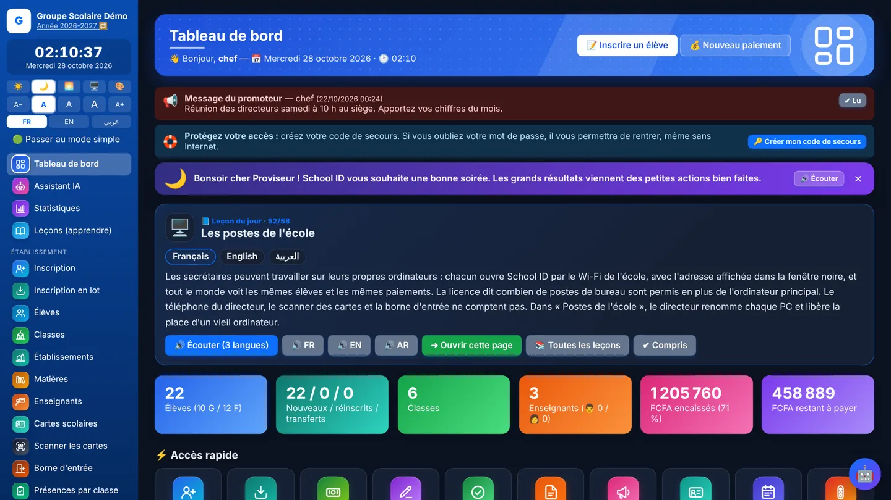
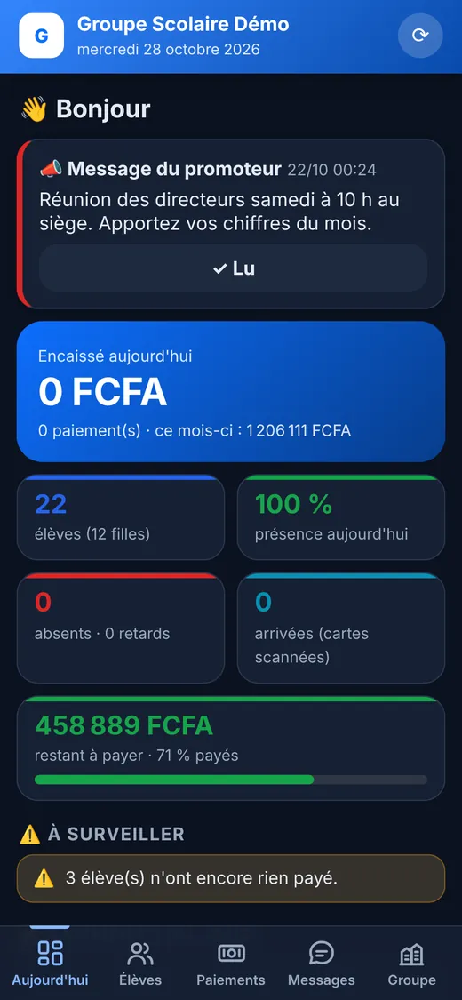
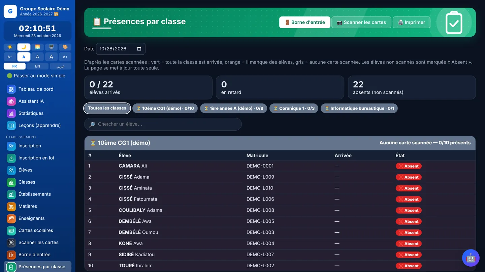
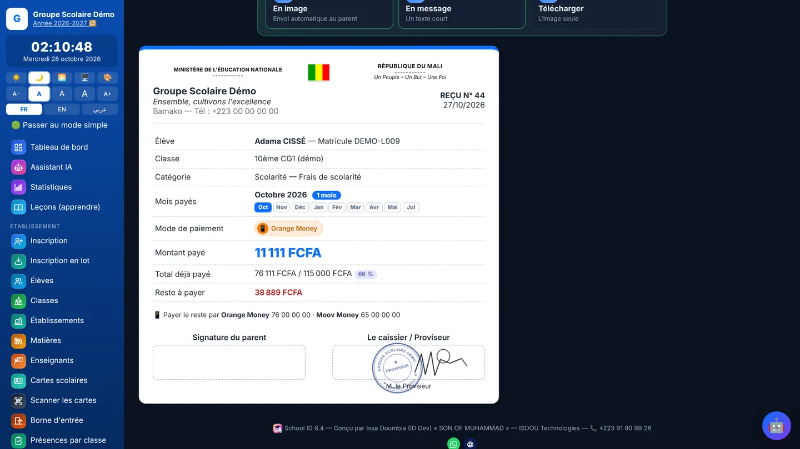
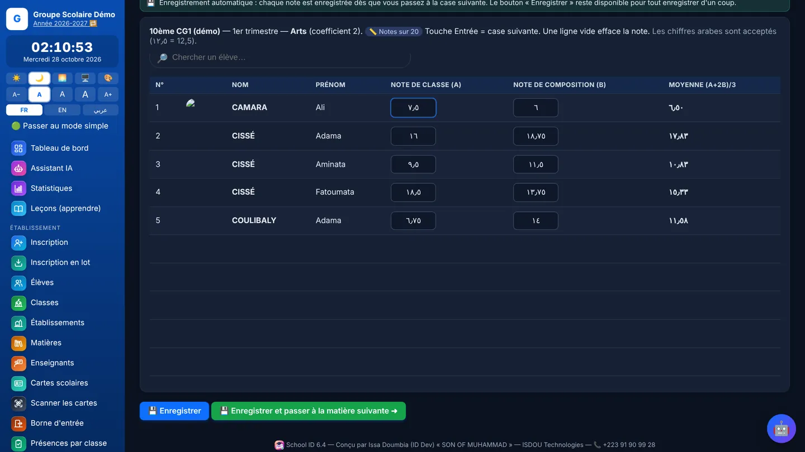
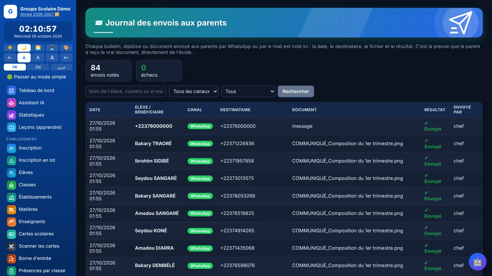
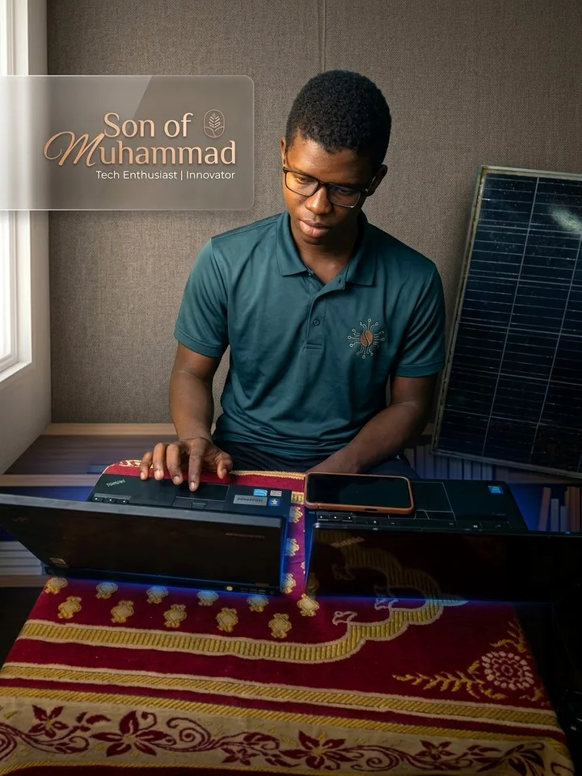

Toute votre école dans un seul logiciel.
Inscriptions, paiements et reçus, notes et bulletins, cartes QR, présences. Les bulletins partent tout seuls sur le WhatsApp des parents, et School ID marche même sans Internet.
- Français, anglais et arabe
- Marche sans Internet
- Espèces, Orange Money, Moov Money, Wave
- Écoles, médersas, écoles de santé et groupes scolaires


School ID de A à Z, expliqué par son créateur
Issa Doumbia, qui a conçu School ID, vous montre chaque écran : de l'installation jusqu'à l'envoi des bulletins aux parents. Cliquez sur un chapitre pour y aller directement.
Recevoir cette vidéo sur votre téléphone : par WhatsApp par SMS
Une journée à l'école avec School ID
Ce que voient la secrétaire, les enseignants, le directeur et les parents, heure par heure.
Les élèves scannent leur carte à l'entrée
Chaque carte scolaire porte un QR code. À la porte, un téléphone ou une borne note l'arrivée. La page des présences montre les absents de chaque classe, et un message peut partir aux parents.

Un parent paie trois mois d'un coup
La secrétaire coche octobre, novembre et décembre. Le reçu s'imprime avec le reste à payer, le cachet et la signature, et part au parent sur WhatsApp en un clic.

Les notes de la composition sont saisies
On choisit la classe, la période et la matière, puis on tape les notes. Les moyennes et les rangs se calculent tout seuls.

Les bulletins partent aux parents
Un clic sur « Envoyer aux parents » : chaque bulletin part en PDF sur le WhatsApp du parent, environ deux secondes par parent. Le journal des envois garde la preuve de chaque envoi.

Le directeur fait le point depuis chez lui
Sur son téléphone : l'argent encaissé aujourd'hui, les présences, les impayés et les messages du promoteur.
Les écrans de School ID
De vraies captures du logiciel, avec une école de démonstration. Changez de langue en haut de la page : les écrans changent aussi.
Tout ce dont une école a besoin
- Inscriptions
- Fiche de l'élève et des parents, photo, inscription de toute une liste depuis Excel.
- Paiements et reçus
- Plusieurs mois en une fois, reste à payer, impayés par classe, Orange Money, Moov ou Wave. Chaque reçu a un QR code : un faux reçu se voit tout de suite.
- Notes et bulletins
- Moyennes, rangs, appréciations, tableau d'honneur. Bulletins en français, en anglais ou en arabe.
- Cartes scolaires QR
- Cartes des élèves et des enseignants avec photo, sur papier ou cartes en plastique.
- Présences et retards
- Appel par carte ou par classe, emplois du temps, cloche à l'heure, alerte quand un enseignant est en retard.
- Parents sur WhatsApp
- Reçus, bulletins, communiqués et messages d'absence, envoyés depuis le numéro de l'école.
- Application du directeur
- L'argent du jour, les présences et les impayés sur le téléphone, même loin du bureau.
- Statistiques et rapport annuel
- Effectifs, paiements par mois, résultats par classe, assiduité. Le rapport de fin d'année en un clic.
- Groupes scolaires
- Le promoteur suit toutes ses écoles et leur envoie des messages depuis son propre ordinateur.
- Diplômes, jusqu'au Doctorat
- Attestations, certificat de scolarité, tableau d'honneur, diplôme coranique, BTS, DUT, Licence, Master et Doctorat, avec un QR code contre les faux.
- Une, deux ou trois langues
- Français, anglais, arabe : l'école choisit. Une école française ne voit pas l'arabe, une médersa ne voit pas le français.
- Une vraie application
- Sa propre fenêtre et son icône sur le Bureau, seulement les outils que vous choisissez, et l'annonce « les bulletins sont disponibles » dès la dernière note.
- Universités (LMD)
- De la L1 au M2 et le BTS : UE et crédits, compensation, relevés Validé ou Ajourné, et cartes d'étudiant.
- Admis et redoublants
- En fin d'année, une page pour les admis, une pour les redoublants, classe par classe, avec le cachet.
- Matières en un clic
- Listes prêtes du primaire au Master, ou votre fichier Excel. Une nouvelle classe reçoit la bonne liste toute seule.
- Les règles de votre pays
- Monnaie, rentrée, devise nationale, ministère et examens nationaux de 30 pays : tout suit le pays choisi.
- La notation de votre pays
- Excellent… Passable, WAEC de A1 à F9, lettres A à F : l'Afrique francophone, anglophone et arabe, chacune avec ses appréciations.
- Cartes faciles à scanner
- Une adresse qui ne change jamais, même quand la box redémarre. Ou un lecteur QR USB à l'entrée, sans téléphone.
- Photos d'identité automatiques
- Le téléphone de l'école prend la photo ; School ID la redresse, enlève le mur derrière l'élève et cadre la tête pour la carte. Photos 35 × 45 mm à imprimer pour les examens.
- Crèche et maternelle
- Un mode pour les tout-petits : inscriptions, paiements, appel, cantine et livret d'appréciations, sans notes ni moyennes.
- Tous les reçus, toutes les années
- Un ancien reçu se retrouve en un instant, par le nom, le matricule ou le numéro, même pour un ancien élève, et se réimprime.
- Examens et compositions
- Salles et tables, convocations avec QR, scan des cartes à l'entrée de chaque salle, classes mélangées, anonymat des copies, procès-verbal et statistiques.
- Espace parents
- Un lien secret par élève : le parent suit sur son téléphone les notes, les paiements, les absences, les devoirs et l'emploi du temps de son enfant.
- Cahier de textes et devoirs
- Chaque enseignant écrit ses cours et les devoirs depuis son téléphone, avec son code secret. Les parents voient les devoirs à faire.
- Santé et autorisations
- Vaccins, allergies, traitement, et les personnes autorisées à récupérer l'enfant, affichées au scan de sa carte.
- Rapport du soir
- Chaque soir, le résumé de la journée sur le WhatsApp du directeur : absences, retards, argent encaissé et dépensé.
- Scanner au téléphone
- Le téléphone de l'école scanne les cartes sur le Wi-Fi, et le résultat s'affiche aussi en grand sur l'ordinateur.
- Les liens depuis la maison
- Gratuit avec Tailscale : parents et enseignants ouvrent leur lien en 4G ou sur n'importe quel Wi-Fi. Depuis Internet, seuls leurs espaces s'ouvrent.
- Carnets de la crèche et de la maternelle
- Carnet de suivi ⭐ et livret de réussites 😄 en couleurs, avec le mot de la maîtresse : jamais de mauvaise note pour un petit.
- Badges « enfant perdu »
- Badges colorés pour les petits (case, écusson, rond). Le QR donne l'école, son numéro et le plan, même sans Internet, jamais le nom de l'enfant.
- Emploi du temps collé
- Collez le tableau de la semaine depuis Excel, Word ou un PDF : School ID trouve les jours, les heures, les matières et les enseignants.
- Cartes en couleurs
- Trois nouveaux modèles de cartes : Arc-en-ciel, Joyeux pour les petites classes, et Économie d'encre pour les imprimantes à jet d'encre.
- L'appel par l'enseignant
- Sur son téléphone : sa semaine, le prochain cours, l'appel en trois touches. L'absence arrive aussitôt chez les parents.
- Notes tapées à la maison
- Le professeur corrige chez lui et tape ses notes : par numéro d'anonymat pour les compositions, par nom pour les devoirs, avec l'appréciation du bulletin.
- Parents : bulletins et mobile money
- Bulletins publiés après le conseil, communiqués, tous les enfants dans un lien, absences signalées, paiement Orange Money ou Moov confirmé par l'école.
- Diplômes, bulletins et reçus vérifiables
- Un QR facile à scanner : n'importe quel téléphone ouvre « ✅ authentique ». Un papier modifié est démasqué.
- Écoles de santé
- Santé publique, SMI, TLP, sage-femme, IDE… Stages et stage rural, carnet de compétences, examen national et lettres au ministère. L'école ne voit que ce qui la concerne.
- Un rôle pour chacun
- Comptable, censeur, secrétaire, fondateur en lecture seule : chacun voit seulement sa partie. Le serveur refuse le reste, même par une adresse tapée à la main.
- Messages vocaux, sans Internet
- Le directeur et les secrétaires s'envoient des vocaux par le Wi-Fi de l'école. Deux minutes au plus, effacés tout seuls après trois mois.
- Relevé annuel des notes
- Toutes les périodes de l'année sur une page, même pour les classes à composition mensuelle, avec la moyenne annuelle et la décision.
- Reçus en petit format
- A4 coupé en deux avec la souche de l'école, A5, ou ticket 58 et 80 mm pour les petites imprimantes.
- Testé contre les attaques
- School ID a été attaqué volontairement avec les outils des experts en sécurité (Nmap, OWASP ZAP) : aucune faille. Un journal note chaque tentative.
Comment ça se passe chez vous
Pas besoin d'informaticien dans l'école. On s'occupe de tout, sur place.
Installation
School ID est installé sur l'ordinateur de l'école en quelques minutes, sans Internet.
Réglage de l'école
Logo, classes, frais, matières, cachet et signature : on les règle avec vous.
Formation
La secrétaire et le directeur apprennent sur leurs propres élèves. Une leçon du jour les aide ensuite.
Assistance
Une question ? Un message WhatsApp suffit. Les mises à jour arrivent toutes seules par Internet pendant la licence : un clic pour installer.
Vos données restent dans votre école
School ID tourne sur l'ordinateur de l'école, pas sur Internet. Personne d'autre que vous ne voit vos élèves et vos paiements.
- Sauvegarde en un clicSur une clé USB. Si l'ordinateur tombe en panne, tout revient sur un nouveau PC.
- Un compte pour chaque personneSecrétaire, comptable, censeur : chacun voit ce dont il a besoin. Le directeur voit tout, le fondateur regarde sans rien changer.
- Mots de passe protégésAprès cinq essais faux, le compte se bloque quinze minutes.
- Plusieurs ordinateursLes secrétaires travaillent sur leurs propres PC, par le Wi-Fi de l'école, même sans abonnement Internet.
- Testé contre les attaquesPages protégées contre l'injection de code, journal de sécurité, ordinateur fermé aux autres appareils du Wi-Fi sauf School ID.
- Windows 8.1, 10 et 1132 ou 64 bits, même sur un PC sans Internet.
Un prix selon la taille de votre école
Petite école
Moins de 200 élèves
- Installation et formation
- Licence de 12 mois
- Mises à jour et assistance WhatsApp
École moyenne
200 à 600 élèves
- Tout ce que contient la petite école
- Postes des secrétaires en réseau
- Paiement par mois possible
Grande école et groupe
Plus de 600 élèves
- Plusieurs postes
- Licence Groupe pour plusieurs écoles
- Visites dans l'école
Universités et grandes écoles (LMD, BTS, DUT) : une licence dédiée. Pack clé en main : installation, import des élèves et formation à prix réduit. Installation offerte si la licence est payée avant la rentrée.
Le devis est gratuit : écrivez-nous sur WhatsApp avec le nombre d'élèves de votre école.
Les questions des directeurs
Faut-il Internet ?
Non. School ID marche sans Internet. Il en faut seulement au moment d'envoyer des messages WhatsApp aux parents. Même les postes des secrétaires marchent sans Internet : une simple box Wi-Fi suffit.
Et si l'ordinateur tombe en panne ?
Avec la sauvegarde sur clé USB, on remet toutes les données sur un nouvel ordinateur sans rien perdre.
Plusieurs secrétaires peuvent-elles travailler en même temps ?
Oui. Chacune a son compte et son ordinateur, reliés par le Wi-Fi de l'école. Le nombre de postes dépend de la licence.
Les bulletins existent-ils en arabe ?
Oui : en français, en anglais ou en arabe, avec les matières dans la bonne langue. Le logiciel lui-même s'utilise aussi dans ces trois langues, et l'école peut n'en garder qu'une ou deux.
Nos anciens élèves sont dans un fichier Excel. On recommence tout ?
Non. La liste des élèves s'importe depuis Excel en une fois.
Ça marche sur Mac ou Linux ?
School ID est fait pour Windows (8.1, 10 et 11). Pour un Mac ou un PC Linux, parlez-nous-en : on le prépare sur demande.
Notre école n'est pas au Mali. Ça marche ?
Oui. Choisissez votre pays : drapeau, nom officiel, devise nationale, monnaie, mois de la rentrée, indicatif WhatsApp, examens nationaux et système de notation suivent tout seuls. Afrique francophone (DEF, BEPC, BFEM, BAC), anglophone (WAEC, BECE, WASSCE, KCSE, PLE) et arabe : 30 pays sont déjà réglés, et le directeur peut tout modifier.
Nous sommes une université ou une école de BTS. School ID convient ?
Oui. Cochez « Système LMD » dans la classe : chaque matière reçoit son UE et ses crédits. School ID calcule la moyenne de chaque UE, les crédits acquis et le résultat (Validé, Validé par compensation, Ajourné), imprime les relevés de notes et les listes des validés et des ajournés, ainsi que les diplômes BTS, DUT, Licence, Master et Doctorat.
Peut-on afficher les admis et les redoublants séparément ?
Oui. En fin d'année, School ID imprime une page pour les admis, une pour les redoublants et une pour les sortants, classe par classe, par ordre de mérite ou alphabétique, avec l'en-tête officiel et le cachet.
Comment recevons-nous les nouvelles versions ?
Toutes seules. Chaque jour, quand l'ordinateur a Internet, School ID cherche la nouvelle version et la télécharge. Le directeur clique « Installer maintenant » : School ID fait une copie de sécurité, s'installe et redémarre en quelques minutes, sans toucher aux données. Sans Internet, on vous envoie le fichier par WhatsApp. Seuls les fichiers signés par School ID sont acceptés.
Nous n'avons pas besoin de tout. Le logiciel sera compliqué ?
Non. À l'installation, vous choisissez votre type d'établissement (fondamental, lycée, franco-arabe, centre coranique, université…) et les outils à afficher. School ID ne montre que ce qui vous concerne : une université ne voit rien de coranique, une école franco-arabe ne voit pas les outils des centres coraniques. Vous pouvez ajouter ou retirer un outil à tout moment.
Nos matières sont dans un fichier Excel. Faut-il tout retaper ?
Non. Dans « Ajouter plusieurs matières », prenez votre fichier Excel ou CSV, ou une liste prête (maternelle, primaire, collège, lycée par série, université de la L1 au M2, BTS, écoles anglophones). Un modèle Excel se télécharge sur la même page.
Le téléphone doit-il être sur Internet pour scanner les cartes ?
Non, seulement sur le Wi-Fi de l'école. School ID donne aux cartes une adresse qui ne change jamais, même quand la box redémarre. À l'entrée, un lecteur QR USB branché sur l'ordinateur marche aussi, sans téléphone.
Nous sommes en Guinée. Qui contacter ?
Écrivez ou appelez sur WhatsApp au +224 611 52 06 80. School ID connaît déjà la Guinée : franc guinéen, IRE et DPE ou DCE, CEE, BEPC et Baccalauréat unique.
Un parent peut-il présenter un faux reçu ?
Non. Chaque reçu porte un QR code et un code de vérification. Dans School ID, « Vérifier un reçu » montre le vrai paiement : un montant changé au stylo ou un reçu inventé se voit tout de suite.
Et si l'ordinateur de l'école est volé ou tombe en panne ?
School ID fait une sauvegarde chaque jour. Avec Google Drive (gratuit) installé sur l'ordinateur, un clic suffit pour que chaque sauvegarde parte aussi sur Internet. Sur un nouvel ordinateur, tout revient en quelques minutes.
Le téléphone de l'école peut-il prendre les photos des élèves ?
Oui. Sur le même Wi-Fi, ouvrez la page « Photos des élèves » sur le téléphone et touchez « Photo » : l'appareil photo s'ouvre. School ID enlève le fond, cadre la tête et place la photo sur la carte. La séance photo passe d'un élève à l'autre tout seul.
Peut-on retrouver un ancien reçu ?
Oui. Tous les reçus restent, année par année, même ceux des anciens élèves. On les retrouve par le nom, le matricule ou le numéro du reçu, et on les réimprime.
Que voit-on en scannant la carte d'un élève ?
Toute sa fiche : photo, classe, groupe sanguin, allergies, état de santé, boutons pour appeler le parent, moyenne, absences et paiements. En cas d'urgence, l'infirmière ou le surveillant a tout en une seconde. Ces informations ne s'affichent qu'au personnel connecté de l'école. Les universités ont leur carte d'étudiant.

Qui a conçu School ID ?
Je m'appelle Issa Doumbia. Je suis étudiant, et j'ai conçu School ID en écoutant des directeurs, des secrétaires et des promoteurs d'écoles : des reçus perdus, des soirées de calcul des moyennes, des parents prévenus trop tard. Chaque fonction du logiciel répond à un problème vrai d'une école de chez nous.
« Une école bien gérée, c'est plus de temps pour les élèves. School ID fait le travail des cahiers, pour que l'équipe s'occupe de l'essentiel. »
Issa Doumbia « SON OF MUHAMMAD »Fondateur d'ISDOU Technologies
On vient vous montrer School ID dans votre école
La démonstration est gratuite. Remplissez ces quelques lignes : le message se prépare tout seul, vous n'avez plus qu'à l'envoyer. Vous pouvez aussi écrire ou appeler directement.
+223 91 90 99 28
Guinée : +224 611 52 06 80